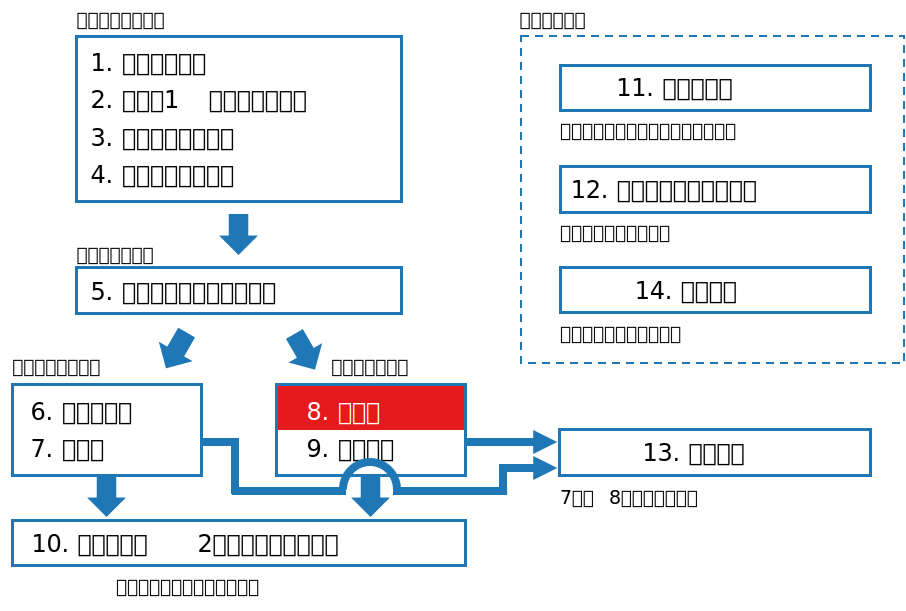
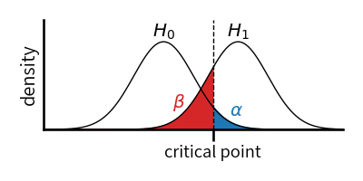
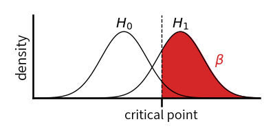
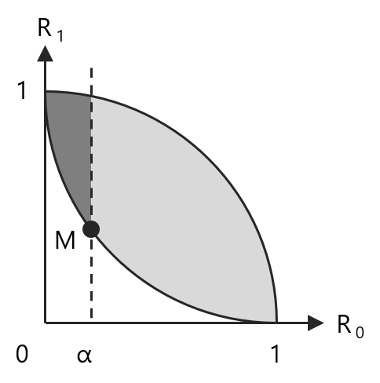
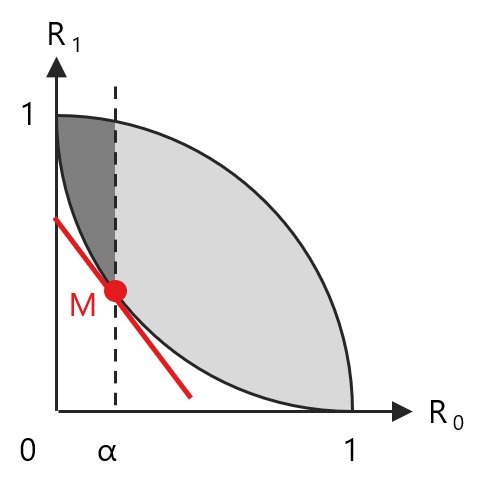
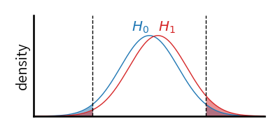
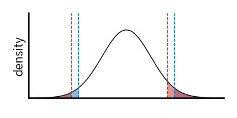
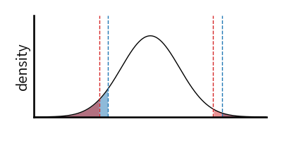

class: middle, center # 数理統計学特論II<br>第2回 検定論 奥 牧人 (和漢研) 2022/06/22 --- # 前回の復習 * 前回は大学1年生向けの教科書に出てくるキーワードの意味を<br>確認しました。 * 平均 * 分散 * 相関係数 * 正規分布 * 大数の法則 * 95%信頼区間 * t検定 * P値 * etc. --- # 今回の位置付け  --- # 今回の目的と達成目標 目的 * 検定の「良さ」に関する用語と概念を理解すること 達成目標 * 検出力の意味を説明できる。 * ネイマン・ピアソンの補題の意味を説明できる。 * 一様最強力検定の意味を説明できる。 * 不偏検定の意味を説明できる。 * 尤度比検定の意味を説明できる。 --- # 予習用キーワードの確認 * 損失関数 * 決定関数 * リスク関数 --- # Outline 1. 検定論の枠組み 2. 最強力検定とネイマン・ピアソンの補題 3. リスクセットの考え方とネイマン・ピアソンの補題 4. 単調尤度比と一様最強力検定 5. 不偏検定 6. 尤度比検定 --- # Outline 1. **検定論の枠組み** 2. 最強力検定とネイマン・ピアソンの補題 3. リスクセットの考え方とネイマン・ピアソンの補題 4. 単調尤度比と一様最強力検定 5. 不偏検定 6. 尤度比検定 --- # 帰無仮説と対立仮説 * 例、母集団の平均 $\mu$ が $0$ かどうかの検定 $$H_0:\mu=0\quad\mathrm{vs.}\quad H_1:\mu\neq 0$$ * $H_0$ を帰無仮説、$H_1$ を対立仮説と呼ぶ * より一般に、母数を $\theta$ とし、母数空間を $\Theta=\Theta_0\cup\Theta_1$, $\Theta_0\cap\Theta_1=\emptyset$ として次のように書く $$H_0:\theta\in\Theta_0\quad\mathrm{vs.}\quad H_1:\theta\in\Theta_1$$ * 上の例でいうと、$\Theta_0=\\{0\\}$, $\Theta_1=\mathbb{R}\setminus\\{0\\}$ * 集合が $1$ 点のみから成るものを単純仮説、そうでないものを<br>複合仮説と呼ぶ * 検定に関係ない未知母数を局外母数または撹乱母数と呼ぶ --- # 片側検定と両側検定 * 片側検定 $$H_0:\theta\leq\theta_0\quad\mathrm{vs.}\quad H_1:\theta>\theta_0$$ または $$H_0:\theta\geq\theta_0\quad\mathrm{vs.}\quad H_1:\theta<\theta_0$$ * 両側検定 $$H_0:\theta=\theta_0\quad\mathrm{vs.}\quad H_1:\theta\neq\theta_0$$ --- # 第 $1$ 種の過誤と第 $2$ 種の過誤 * 決定理論における決定を $d\in\\{0,1\\}$ とする * 帰無仮説の受容を $d=0$、棄却を $d=1$ とおく * 損失関数は、決定が正しければ $0$、間違っていれば $1$ とする <table class="table text-center mb-5" style="width:80%"> <tr><th></th><th>$d=0$</th><th>$d=1$</th></tr> <tr><th>$H_0:\theta\in\Theta_0$</th><td>$0$</td><td>$1$ (第 $1$ 種の過誤)</td></tr> <tr><th>$H_1:\theta\in\Theta_1$</th><td>$1$ (第 $2$ 種の過誤)</td><td>$0$</td></tr> </table> * 以降では第 $1$ 種の過誤の確率が $\alpha$ 以下という条件下で、第 $2$ 種の過誤の確率が最も小さい検定を良い検定とみなす --- # 片方のみではダメな理由 * 第 $1$ 種の過誤のみで考えた場合 * 標本と関係なく常に $d=0$ とするのが最適となってしまう * 第 $2$ 種の過誤のみで考えた場合 * 標本と関係なく常に $d=1$ とするのが最適となってしまう --- # 注意 * 帰無仮説の「受容」と書いたが、通常は $d=0$ のとき帰無仮説が正しいと主張してはいけない。 * なぜなら、通常は第 $1$ 種の過誤を抑えるために有意水準 $\alpha$ を<br>小さい値にするので、第 $2$ 種の過誤の確率が大きいからである。 * 「有意ではない」は OK --- # 検定統計量と棄却点 * 検定論では決定関数 $\delta(X)$ のことを検定関数と呼ぶ * $\delta(X)$ は以下のような形になっている場合が多い $$\delta(X)=\left\\{\begin{array}{cc}0&\mathrm{if}\quad T(X)\leq c\\\\1&\mathrm{if}\quad T(X)>c\end{array}\right.$$ * $T(X)$ のことを検定統計量、$c$ を棄却点または棄却限界と呼ぶ * これを以下のように略記する場合がある $$T(X)>c\quad\Rightarrow\quad\mathrm{reject}$$ * さらに $p$-値を使って次のようにも書ける (以降では使わない) $$p\text{-value}\leq\alpha\quad\Rightarrow\quad\mathrm{reject}$$ --- # 検出力 * 検出力関数 (通常使う $\beta$ とは逆なので注意) $$\beta(\theta)=E[\delta(X)]=P(\delta(X)=1)$$ * 検定関数を明示する場合は $\beta_\delta(\theta)$ のように書く * リスク関数 $$R(\theta,\delta)=\left\\{\begin{array}{ll}\beta(\theta)&\mathrm{if}\quad\theta\in\Theta_0\\\\1-\beta(\theta)&\mathrm{if}\quad\theta\in\Theta_1\end{array}\right.$$ * 有意水準が $\alpha$ の検定 $$\beta(\theta)\leq\alpha,\quad\forall\theta\in\Theta_0$$ * $\max_{\theta\in\Theta_0}\beta(\theta)$ を検定のサイズと呼ぶ --- # 注意 * 通常は $P(\delta(X)=0\mid H_1)=\beta$ とし、$1-\beta$ を検出力と呼ぶ  * ここでは $P(\delta(X)=1)=\beta(\theta)$ とおき、$\beta(\theta)$ を検出力と呼ぶ  --- # Outline 1. 検定論の枠組み 2. **最強力検定とネイマン・ピアソンの補題** 3. リスクセットの考え方とネイマン・ピアソンの補題 4. 単調尤度比と一様最強力検定 5. 不偏検定 6. 尤度比検定 --- # 問題設定 * $H_0$, $H_1$ がともに単純仮説とする $$H_0:\theta=\theta_0\quad\mathrm{vs.}\quad H_1:\theta=\theta_1$$ * 有意水準 $\alpha$ の検定 $\delta^*$ が最強力検定であるとは、任意の有意水準 $\alpha$ の検定 $\delta$ に対して以下が成り立つこと ($H_0$ は複合でも良い) <div>$$\beta_{\delta^*}(\theta_1)\geq \beta_\delta(\theta_1)$$</div> * 尤度比 $$L=\frac{f(x,\theta_1)}{f(x,\theta_0)}$$ * ここで $f(x,\theta)$ は確率質量関数または確率密度関数 --- # ネイマン・ピアソンの補題 * 単純仮説の場合は尤度比に基づく検定が最も良いという補題 * 次の形で表されるサイズ $\alpha$ の検定関数は、有意水準 $\alpha$ の検定の中で最強力検定である $$\delta(x)=\left\\{\begin{array}{cc}1&\mathrm{if}\quad L>c\\\\r&\mathrm{if}\quad L=c\\\\0&\mathrm{if}\quad L<c\end{array}\right.$$ * ここで $c\geq 0$, $r\in[0,1]$ とし、$d=r$ では確率 $r$ で $1$ とする --- # Outline 1. 検定論の枠組み 2. 最強力検定とネイマン・ピアソンの補題 3. **リスクセットの考え方とネイマン・ピアソンの補題** 4. 単調尤度比と一様最強力検定 5. 不偏検定 6. 尤度比検定 --- # リスクセットの考え方 * リスク点: $\theta$ の値ごとのリスクを各座標値とみなした点 $$(R_0,R_1)=(R(\delta,\theta_0),R(\delta,\theta_1))$$ * リスクセット: 様々な $\delta$ に関するリスク点の集合 * 有意水準 $\alpha$ の最強力検定は下図の点 $M$  --- # ネイマン・ピアソンの補題との関係 * 点 $M$ を通る接線を $R_1=-c R_0+a$ とおく * 傾き $c$ を固定したとき、切片 $a$ は実現可能な範囲で最小 $$a=\min_\delta\\{R_1+c R_0\\}$$  --- # ネイマン・ピアソンの補題との関係 * 一方、$R_1+c R_0$ を計算すると $$\begin{align}R_1+cR_0&=P(d=0\mid\theta=\theta_1)+cP(d=1\mid\theta=\theta_0)\\\\&=\int(1-\delta(x))f(x,\theta_1)dx+c\int\delta(x)f(x,\theta_0)dx\\\\&=1-\int\delta(x)(f(x,\theta_1)-cf(x,\theta_0))dx\end{align}$$ * これを最小化する $\delta(x)$ は、積分の中身を最大化するので $$\delta(x)=\left\\{\begin{array}{cc}1&\mathrm{if}\quad f(x,\theta_1)-cf(x,\theta_0)>0\\\\0&\mathrm{if}\quad f(x,\theta_1)-cf(x,\theta_0)<0\end{array}\right.$$ となり、確かに尤度比に基づく検定となっている。 --- # Outline 1. 検定論の枠組み 2. 最強力検定とネイマン・ピアソンの補題 3. リスクセットの考え方とネイマン・ピアソンの補題 4. **単調尤度比と一様最強力検定** 5. 不偏検定 6. 尤度比検定 --- # 一様最強力検定 * 一般の場合 $$H_0:\theta\in\Theta_0\quad\mathrm{vs.}\quad H_1:\theta\in\Theta_1$$ * **一様最強力検定** (Uniformly Most Powerful test, **UMP 検定**) * 有意水準 $\alpha$ の検定 $\delta^*$ が UMP 検定であるとは、任意の有意水準 $\alpha$ の検定 $\delta$ に対して以下が成り立つこと <div>$$\beta_{\delta^*}(\theta)\geq \beta_\delta(\theta),\quad\forall\theta\in\Theta_1$$</div> * 常に存在するとは限らない --- # 単調尤度比 * ある統計量 $T(x)$ を用いて尤度比が $$L=\frac{f(x,\theta_1)}{f(x,\theta_0)}=g(T(x),\theta_0,\theta_1)$$ と書け、任意の $\theta_0<\theta_1$ に対して $g$ が $T(x)$ の単調増加関数で<br>あるとき、$f(x,\theta)$ は $T(x)$ に関して単調尤度比を持つという --- # 例 * 母数が $1$ 次元の指数型分布族 ($\psi$ は自然母数) $$f(x,\psi)=h(x)\exp\left(\psi T(x)-c(\psi)\right)$$ * 例、ポアソン分布、分散のみ未知の正規分布など * 尤度比 $$\frac{f(x,\psi_1)}{f(x,\psi_0)}=\exp\left((\psi_1-\psi_0)T(x)-(c(\psi_1)-c(\psi_0))\right)$$ * これは $\psi_0<\psi_1$ のとき $T(x)$ の単調増加関数 --- # UMP 検定の十分条件 * 条件 * $\theta$ が一次元 * $f(x,\theta)$ が $T(x)$ に関して単調尤度比を持つ * 片側検定 $H_0:\theta\leq\theta_0\quad\mathrm{vs.}\quad H_1:\theta>\theta_0$ * このとき任意の $\alpha\in[0,1]$ に対して $c\in(-\infty,\infty)$, $r\in[0,1]$ が存在し、次の形の検定関数が有意水準 $\alpha$ の UMP 検定となる $$\delta(x)=\left\\{\begin{array}{cc}1&\mathrm{if}\quad T(x)>c\\\\r&\mathrm{if}\quad T(x)=c\\\\0&\mathrm{if}\quad T(x)<c\end{array}\right.$$ --- # Outline 1. 検定論の枠組み 2. 最強力検定とネイマン・ピアソンの補題 3. リスクセットの考え方とネイマン・ピアソンの補題 4. 単調尤度比と一様最強力検定 5. **不偏検定** 6. 尤度比検定 --- # 不偏検定 * 両側検定の場合、一様最強力検定 (UMP 検定) は存在しない。 * **不偏検定** $$\begin{align}\beta(\theta)&\leq\alpha,\quad\forall\theta\in\Theta_0\\\\\beta(\theta)&\geq\alpha,\quad\forall\theta\in\Theta_1\end{align}$$ * **一様最強不偏検定** (Uniformly Most Powerful Unbiased test, **UMPU** 検定) * $\delta, \delta^\*$ を有意水準 $\alpha$ の不偏検定とする。 * 任意の $\delta$ に関して以下が成り立つとき、$\delta^\*$ は UMPU 検定 <div> $$\beta_{\delta^*}(\theta)\geq\beta_\delta(\theta),\quad\forall\theta\in\Theta_1$$ </div> --- # 位置母数の場合 * 分布を右に少しずらすと、右の面積が増え、左は減る。  * これは棄却域を左にずらすのと同じ  --- # 位置母数の場合、続き * 棄却域が左右対称なら、増える分は減る分より大きい * 左右対称でないと、検出力が $\alpha$ より減ってしまう場合がある  --- # Outline 1. 検定論の枠組み 2. 最強力検定とネイマン・ピアソンの補題 3. リスクセットの考え方とネイマン・ピアソンの補題 4. 単調尤度比と一様最強力検定 5. 不偏検定 6. **尤度比検定** --- # 尤度比検定 * UMP 検定や UMPU 検定が存在しない場合にも使える方法 * 尤度関数 <div>$$f_n(x,\theta)=\prod_{i=1}^nf(x_i,\theta)$$</div> * 尤度比 <div>$$L=\frac{\displaystyle\max_{\theta\in\Theta_1}f_n(x,\theta)}{\displaystyle\max_{\theta\in\Theta_0}f_n(x,\theta)}$$</div> * 尤度比検定 $$L>c\quad\Rightarrow\quad\mathrm{reject}$$ --- # 例 * $X_1,\ldots,X_n\stackrel{i.i.d.}{\sim}N(\mu,\sigma^2)$ とし、$\sigma^2$ は未知の局外母数として、以下の検定問題を考える $$ H_0: \mu=0\quad \mathrm{vs.}\quad H_1:\mu\neq 0$$ * $H_0$ のもとでの最尤推定量は $\hat\sigma_0^2=\sum x_i^2/n$ * $H_1$ のもとでの最尤推定量は $\hat\mu_1=\bar x$, $\hat\sigma_1^2=\sum (x_i-\bar x)^2/n$ * 連続値なので $P(\hat\mu_1=0)=0$ となるため $\mu\neq 0$ は無視 * これらを代入して整理すると、尤度比は <div>$$L=\left(\frac{\sum_{i=1}^n x_i^2}{\sum_{i=1}^n(x_i-\bar x)^2}\right)^{n/2}$$</div> --- # 例、続き * ここで $\sum x_i^2=\sum(x_i-\bar x)^2+n\bar x^2$ を用いると $$\begin{align}L^{2/n}&=1+\frac{n\bar x^2}{\sum_{i=1}^n(x_i-\bar x)^2}\\\\&=1+\frac{1}{n-1}t^2\end{align}$$ * (参考) $t$ 統計量 $$t = \frac{\sqrt{n}(\bar x-\mu)}{s}$$ * $L$ は $t^2$ の単調増加関数なので、この場合は両側 $t$ 検定と尤度比検定が等価になることが示された $$t^2>t_{\alpha/2}(n-1)^2\quad\Rightarrow\quad\mathrm{reject}$$ --- # 漸近分布 * 帰無仮説では値が固定され、対立仮説では自由に動けるパラメータの数を $p$ とすると、帰無仮説のもとで $$2\log L\stackrel{d}{\to}\chi^2(p)$$ * 従って、$n$ が大きい場合は、$\chi^2$ 分布の上側 $\alpha$ 点を使って $$2\log L>\chi^2_\alpha(p)\quad\Rightarrow\quad\mathrm{reject}$$ とすれば、近似的に有意水準 $\alpha$ の検定となる --- # まとめ 検定の「良さ」に関する用語と概念を説明しました。 1. 検定論の枠組み<br> <span class="times">!</span> 検出力の意味を説明できる? 2. 最強力検定とネイマン・ピアソンの補題<br> <span class="times">!</span> ネイマン・ピアソンの補題の意味を説明できる? 3. リスクセットの考え方とネイマン・ピアソンの補題 4. 単調尤度比と一様最強力検定<br> <span class="times">!</span> 一様最強力検定の意味を説明できる?<br> 5. 不偏検定<br> <span class="times">!</span> 不偏検定の意味を説明できる? 6. 尤度比検定<br> <span class="times">!</span> 尤度比検定の意味を説明できる? --- # 小テスト * Moodleで小テストに回答して下さい。 * **期限は今週中** (日曜の23:59まで) とします。 * 繰り返し受験して構いません。最高得点で成績をつけます。 --- # 次回の予習用キーワード * $95$ %信頼区間 * $t$ 分布